-

The McIntyres in Australia
A Tale of Two Entire Families - Part 3
There are lots of McIntyres who went to Australia including our direct ancestors Archibald and Jessie belonging to the Kilmonivaig Mcintyres who are covered elsewhere. They eventually met up with the Glenartney McIntyre family members who had arrived in the colony a little earlier. Archibald's brothers John, Allan, William, Donald, and Duncan Kennedy all migrated to Australia and most if not all of them took to buying land in the new colony. William, as was mentioned elsewhere married Mary, one of the Glenartney McIntyres. Mary and William built themselves a 22 room house on their Pitnacree Estate which Mary had inherited from her brother Peter.

Rev. William McIntyre arriving Dec 12, 1837, on the Mid-Lothian with 259 immigrants in steerage.
Exactly when it was that Archibald's brothers John and Donald went to Australia remains a mystery. Indeed the same can be said about Archibald himself, as well as some of the other McIntyres. For instance, William's wife Mary and her brothers, also named John and Donald, all managed to slip into Australia without leaving a paper trail.
The first of the brothers clearly documented is Rev. William McIntyre, who arrived in 1837 on board the Mid-Lothian along with a group of hand picked Highland worker-families from the Isle of Skye. William rapidly made a name for himself as the Gaelic speaking preacher and teacher of Scottish protestant ethics. Seventeen years after entering the colony, William returned to Scotland and encouraged his brothers Allan and Duncan Kennedy to also become Reverends and join him on his mission in his new homeland. They arrived in 1854 with lots of other family and friends on the Berhampore just a few months after Jessie and Duncan had made the trip.
In March of 1854, Jessie arrived in New South Wales from Scotland with all seven of her children including the eldest, Duncan, and his new wife, Isabella and their two children. Archibald is believed to have travelled earlier, probably to set up their new home before the rest of the family arrived. It is likely he landed in Sydney via the Prince of the Seas in March of 1853. Duncan, the eldest child was 23 at the time and the youngest, Mary, about three or four. So they would have had their hands quite full bringing everyone into safe quarters upon arrival. Our main interest here is the family of Archibald and Jessie and what happened to their descendants.
» Archibald McIntyre (1804–1861)
married Jessie Dewar Halling (1808–1887) in Kilmonivaig, Lochaber, Inverness, 18.12.1828and they had the following children:
Duncan McIntyre 25.06.1830 –
*Glasgow15.09.1916
†Wardellm. Isabella Kelly in Edinburgh, 9.02.1851
m. Ellen Kirby in Pimlico, 23.10.1865
m. Elizabeth May McDonald in Broadwater, 19.05.1875Elizabeth Campbell McIntyre 20.04.1832 –
*Glasgow2.03.1835
†Glasgowalmost three years old Flora Mary McIntyre ??.??.1835 –
*Glasgow3.02.1878
†Redfernunmarried Katherine Amelia Campbell McIntyre 27.09.1836 –
*Glasgow7.11.1916
†Sydneym. John Bridge in West Maitland, 24.05.1860 John Archibald McIntyre 20.09.1841 –
*Edinburgh5.08.1927
†Toowoombam. Christina Campbell in Newstead, near Inverell, 20.08.1863
m. Isabella Martha Muirson in Wellingrove, 1877
m. Mary Agnes Clarke in Campbelltown, 1886
m. Elizabeth Oliver in Glen Innes, 2.11.1895Eglantine Jane Upton Balfour
MacDougall McIntyre28.08.1845 –
*Edinburgh19.07.1920
†Inverellm. John McGregor at Blairmore, Aberdeen, 4.03.1862 William McKinnon McIntyre ??.??.1849 –
*Edinburgh10.11.1933
†Strathfieldm. Catherine McIntyre Kennedy Mclardy in Orange, 1888 Mary Georgina McIntyre ??.??.1850 –
*Edinburgh3.11.1901
†Sydneym. John Cameron Campbell in Glen Innes, 31.03.1870
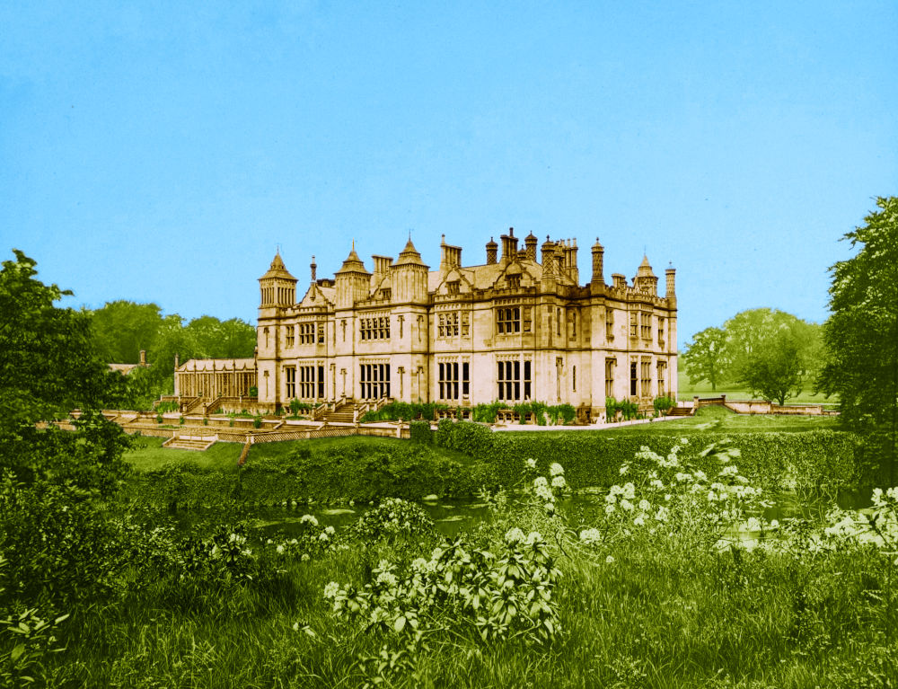Jessie's early life with her mother Catherine Halling, who was a housekeeper at Garscube Estate, obviously had some influence over naming the girls when they were born. Catherine's friend and confident at Garscube was Elizabeth Campbell nee Balfour who was married to the owner, Sir Archibald Campbell of Succoth. One of their daughters was named Katherine Amelia Campbell and was about Jessie's age. Both girls must have grown up together on the estate. Katherine Amelia Campbell's slightly younger first cousins on her mother's side were Eglantine Charlotte Louise Balfour and Katherine Jane Balfour (the diarist famed for being captured by rebels in Canada).Garscube House
Noting that Jessie's first daughter was called Elizabeth Campbell McIntyre and her third Katherine Amelia Campbell McIntyre, the naming gets even more intriguing when considering that of the fourth daughter, Eglantine Jane Upton Balfour MacDougall McIntyre. There is a great likelihood that the above mentioned ladies in the Campbell and Balfour families acted as Godmothers at the births of Jessie's daughters. Whatever the case, names such as Jessie, Katherine, Eglantine, Balfour and Campbell have been maintained in the family over many generations and show little sign of dying out.

Above: Millers Point by Joseph Fowles 1845
Below: An early view of West Maitland about 1837

Millers Point in Sydney
Since Duncan was a fully qualified Baker, he naturally enough set himself up in a bakery business in Sydney. This he did at Millers Point, aptly named for the presence of the flour mills there, which were needed by the rapidly flourishing settlement. If Archibald did indeed arrive in the colony before his family, it would be more than likely that he had found a location for Duncan's new bakery and residence at 42 Windmill Street and it was there that the family was first brought under cover upon arrival.
On to Maitland
Soon after their arrival in Sydney, Archibald and Jessie moved to Maitland in the Hunter Valley where Archibald's brother William had already established a home and school. In Maitland, Archibald and Jessie's children were educated not only by the same rigorous Highland style taught by William but also with a good serving of education in colonial life from their other uncles.
John Archibald, for instance became so savvy with property dealings he was already a manager at the end of his teens. He went on to become one of "The McIntyres" of New England fame. His sister, Amelia married the future wool brokering tycoon, John Bridge, in Maitland, later moving to Sydney. Sister Flora established a Catholic School in Maitland and in her later years, not having married, moved in with the Bridges in their Sydney residence.
Another daughter, Eglantine, married John McGregor, an imposing Scot from Dunstaffnage, who was also managing properties throughout his life. Jessie and Archibald's youngest child, Mary Georgina also married a property owner, John Cameron Campbell, and lived fairly close to her brother John Archibald who was in New England by that time. William McKinnon, the second youngest hooked up with one those close family ties who had accompanied William and his brothers to Australia.

Above: View of Musclebrook in 1869
Below: Jessie's signature on her land purchase

Brushy Hill near Musclebrook
Over the course of a few years, Jessie became a grazier, having progressively acquired land in her name at Brushy Hill near Musclebrook (later known as Muswellbrook) in the Upper Hunter River Valley.The five parcels of adjoining lands at Brushy Hill, two of which were first taken up by Archibald's brother Donald and William's wife Mary and then passed to Jessie, eventually became known as a property called Bethel. It's a curious name and since there is not much to go on when researching what Archibald and Jessie were up to in Australia, it's probably worth investigating.
Most people arriving in the colony of New South Wales had a tendency to name their new property after some place they had left behind in the old country. Originally people were being located in the countryside according to these property names but later as towns and cities grew up around the earlier settlements, street names and street numbers became more important. Archibald and Jessie were amongst the last settlers to call their property by a name. But life in the colony was not easy. Archibald's brother John died in April 1857. In September 1860 as a result of injuries he incurred at the Maitland Riots, brother Donald also died. Soon afterwards in May of 1861, Jessie's mother back in Scotland also passed away and then as a final blow after only another four months, Archibald himself died.
Archibald's restored headstone (photo 2022 from his 3rd-great-granddaughter Rebecca Reardon)
 The epitaph on Archibald's headstone reads:
The epitaph on Archibald's headstone reads:
So teach us to number our days that we may apply our hearts unto wisdom.
PS XC:12.
The name "Bethel" also has something quite biblical about it and seems to hold some sort of hidden message. Hidden in the sense that they must have known what it meant but were leaving it up to everyone else to figure it out. In the Bible there are many references to Bethel as a House of God, or a place where there was a ladder to God, but that still doesn't offer up much of a starting point.
Wikipedia says: Bethel is mentioned in Ezra 2:28 and Nehemiah 7:32 as being resettled at the time of the return of the exiles from Babylon. The word "resettled" seems to strike a chord, as Archibald and Jessie were definitely early Australian settlers. Indeed, in the Postal Directory for New South Wales, Jessie had herself listed at Brushy Hill as "Mrs A. McIntyre, settler". So that could mean that they had left behind them a Babylon of sorts. Babylon of course was an ancient empire and perhaps it was just simply a quip about Scotland or Britain being the "old country", the ancient empire.
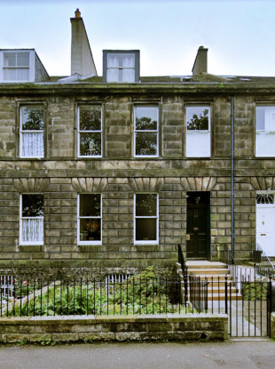Where Isabella had lived in Stockbridge
While I'm worth my room on this earth
I will be with you
While the Chief, puts Sunshine On Leith
I'll thank him for his work
And your birth and my birth.
- The Proclaimers, Sunshine on Leith» Duncan McIntyre (1830-1916) our great-great-grandpa
Duncan, the eldest child of Archibald and Jessie, married three times. All three wives were Catholics which must have gone terribly against the grain of his three staunch Protestant Reverend Uncles. The first wife was Scottish, the second was Irish, the third was an Australian born to Scottish parents and just happened to be the sister of John McDonald, the husband of his eldest daughter, Jessie (our great-grandma). Duncan survived all three of his wives.
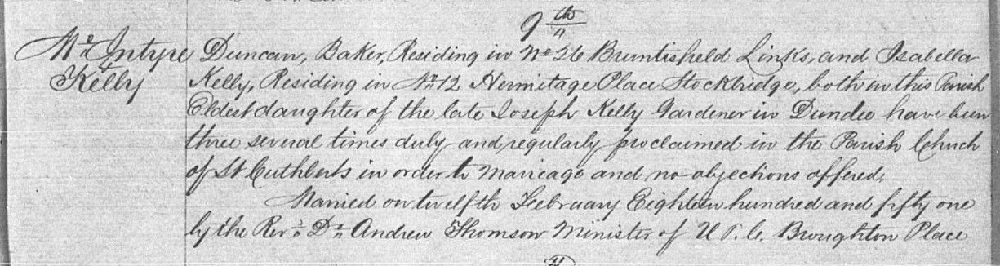Isabella, Duncan's Sunshine on Leith
Duncan's first wife, our great-great-grandmother, Isabella Kelly, was the daughter of Joseph Kelly and Elizabeth Robertson who had also been married in Edinburgh but twenty years earlier. At the time of her marriage to Duncan, Isabella was living in Stockbridge in the Leith area of Edinburgh. The newly married couple took up lodgings near Duncan's family who were residing alongside the Golf Links at Bruntsfield. Isabella's previous home was on the edge of the Leith Links. Perhaps they all liked watching golf while at home.
A few years before her marriage, young Isabella's father had succumbed to the rampant Typhus Fever when she was only nine years old. Even though the Kellys appear to have always been an Edinburgh family, Joseph had been working at the time of his passing as a gardener in Dundee. Strangely he was buried in the famous Howff cemetery where other members of our family, the Rankins, also had their final resting place.
From The Burial Records of the Dundee Howff
Joseph Kelly, Burial 17 Nov 1843, age 38yr, birthplace Dumfries, Gardener, died from Typhus Fever, address ScouringburnFrom Scotland to Australia
Altogether over the course of 65 years Duncan was married three times. During that period he also moved a lot, from Edinburgh to Sydney and from there through northern New South Wales, possibly following work, possibly seeking new horizons. He finally settled in Wardell as an early pioneer of the Richmond River district, where many other branches of our family were also to be found.
Upon arrival from Scotland, Duncan and Isabella lived at Millers Point in Sydney where Duncan practised his profession as a master baker. Four more of their children were born there. After Duncan's grandmother Catherine died in May of 1861 and his father in September of the same year, he turned up at his mother's place in Bethel near Scone presumably to look after the legals. Isabella passed away aged 31 in Sydney on the 6th of December 1863, possibly from an illness or from giving birth. Duncan then moved to the Northern Rivers and possibly left his children with his mother because his daughter Jessie told her daughter Flora that she grew up in New England. Two of Jessie's brothers, Donald and William Kellie also grew up close to their Grandma Jessie and died in Scone and Gundy Gundy respectively.
Duncan allegedly supervised the building of a ship in Pimlico in the Northern Rivers district of the north coast area of New South Wales. He then moved a little further north to Wardell and literally set up shop there. His first store was on one side of the Richmond River and then another on the other side, at East Wardell. He supposedly ran ships, moving produce outbound to Sydney and merchandise back into the Northern Rivers. Duncan also had his hands in many land and property transactions, including mills and a hotel. Upon Duncan's retirement, Allan Roy took over the shop business. Ellen passed away aged 34 on 3rd January 1875 and Duncan remarried a few months later.
When Duncan's mother Jessie died in 1887, he and his brother John Archibald became executors of her estate. They sold her grazing property called Bethel and distributed the funds. Upon Duncan's death, four of his children from this last marriage became executors of his estate but there was a caveat that the estate couldn't be sold for a specified number of years. The youngest child Roderick Dhu was left 20 pounds and successfully sued the estate for more. After the longest of Duncan's marriages, Elizabeth May eventually passed away, aged 64 in Ryde, 24th August 1913. Duncan died three years later in Wardell on 16th September 1916, aged 86.
» Duncan McIntyre (1830–1916)
married his 1st wife Isabella Kelly (1832–1863) in Edinburgh, 9.02.1851
» Duncan McIntyre (1830–1916)
married his 2nd wife Ellen Kirby (1840–1875) in Pimlico, 23.10.1865
» Duncan McIntyre (1830–1916)
married his 3rd wife Elizabeth May McDonald (1848–1913) in Broadwater, 19.05.1875
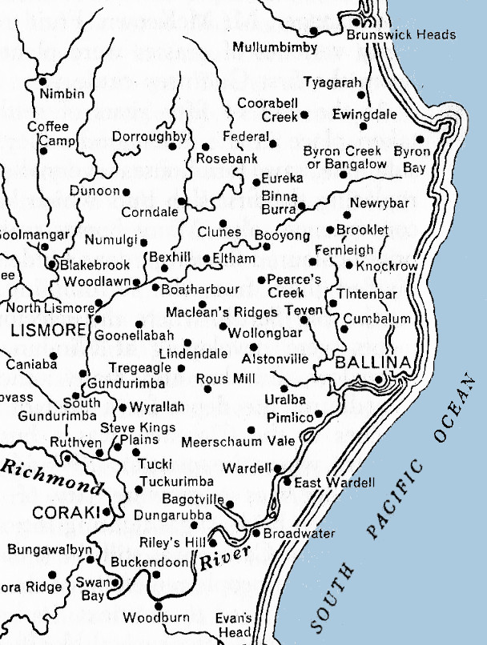Map of the settlements in the Richmond River district
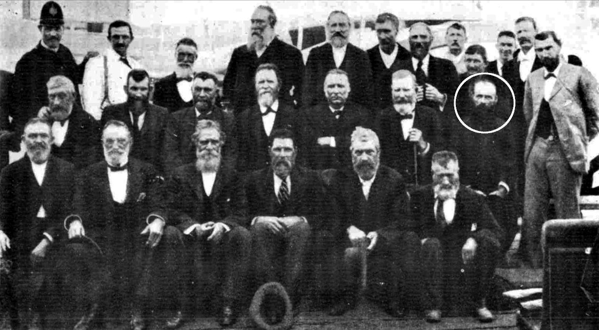1902 Reunion of the Pioneers of the Richmond River
(Duncan McIntyre is circled in white)
Back Row (L-R) Police Constable Myles (Ballina), Andrew Warwick (Ballina), Charles Hancock (Ballina), Captain Storey (Coraki), Henderson Elder (Wardell), Six names not given, A. R Best (Ballina)
Middle Row (L-R) Malone (Swan Bay), R. Gollan (Dungarubba), George McLean (-), William Gollan (Woodburn), William Yabsley (Coraki), George Gollan (Woodburn), McIntyre (Wardell), Mayor Nolan (Coraki)
Front Row (L-R) I. Reardon (Wardell), T. Butler (Swan Bay), John McKinnon (Coraki), T. Casey (Swan Bay), T. Malone (Swan Bay)
» Katherine Amelia Campbell McIntyre (1836–1916)
» Katherine Amelia Campbell McIntyre (1836–1916)
married John Bridge (1832–1897) in West Maitland, 24.05.1860
» John Archibald McIntyre (1841–1927)
John Archibald was the second eldest son of Archibald and Jessie. He was born in Edinburgh and took the trip to Australia with his parents when he was only twelve. His education continued at his Uncle William's school in West Maitland. From Uncles Donald and John, he learnt property management which he in fact took it up seriously as an occupation straight out of school. Various stories are told of his working, managing and eventually owning Peter McIntyre's original station near Aberdeen known as Blairmore. From there he gradually acquired more and more of the lands which comprised Waterloo Station near Inverell. Many of these big land deals he made with his Uncle Duncan Kennedy. Between them many lands were bought, sold and swapped.
John Archibald McIntyre,
of Waterloo, at Glen Innes
All in all he married four times. With all four wives he had children. Like his brother Duncan he survived all his wives.
» John Archibald McIntyre (1841–1927)
married his 1st wife Christina Campbell (1844–1876) in Newstead, near Inverell, 20.08.1863
» John Archibald McIntyre (1841–1927)
married his 2nd wife Isabella Martha Muirson (1853–1885) in Wellingrove, 1877
» John Archibald McIntyre (1841–1927)
married his 3rd wife Mary Agnes Clarke (–1890) in Campbelltown, 1886
» John Archibald McIntyre (1841–1927)
married his 4th wife Elizabeth Oliver (1870–1925) in Glen Innes, 02.11.1895
» Eglantine Jane Upton Balfour MacDougall McIntyre (1845–1920)
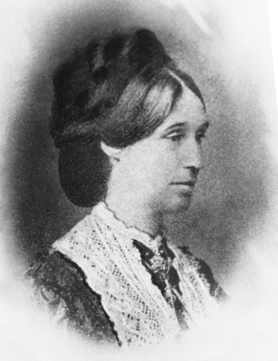Eglantine Jane Upton Balfour MacDougall McIntyre

John McGregor all kitted out
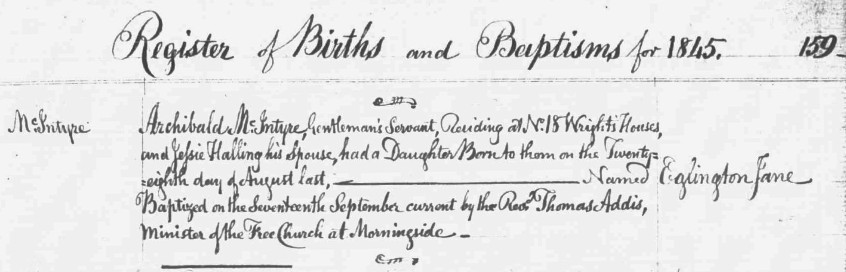Eglantine Jane was the third eldest daughter and the third youngest child of Archibald and Jessie. Just like her next older sibling, John Archibald, she was born in Edinburgh. At that time, the family were living in Bruntsfield, alongside the Golf Links. Just eight years later she was whisked away to Australia with her parents and siblings.Eglantine's Birth in Edinburgh
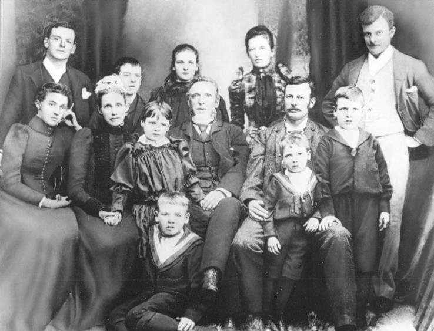Eglantine, John and Family
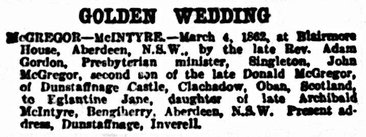Golden Wedding 1912
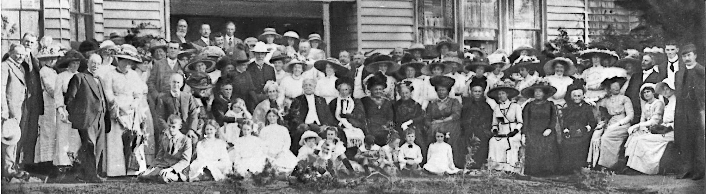
Further information about her formative years is not forthcoming but we do know that at the age of seventeen, she married a tall, imposing upright Scot by the name of John McGregor, twenty years her elder. John, it is said, was the last McGregor to have been born in Dunstaffnage Castle near Oban. This thirteenth century stronghold built by the Lord of Lorn, Duncan McDougall, grandson of the famous Somerled was lost to the Campbells in the 15th century.
Dunstaffnage also became the name of the property in Byron settled by Eglantine and John and where they raised their six daughters and seven sons. The property which was the very first free selection in the Inverell District, was taken up by John on the first Thurday of 1866. At that time John was managing the Blairmore Estate in the Upper Hunter Valley for his brother-in-law Donald McIntyre, who was also Eglantine's uncle.
» Eglantine Jane Upton Balfour MacDougall McIntyre (1845–1920)
married John McGregor (1825–1915) at Blairmore, Aberdeen, 04.03.1862
» William McKinnon McIntyre (1849–1933)
» William McKinnon McIntyre (1849–1933)
married Catherine McIntyre Kennedy Mclardy (1851–1936) in Orange, ??.??.1888
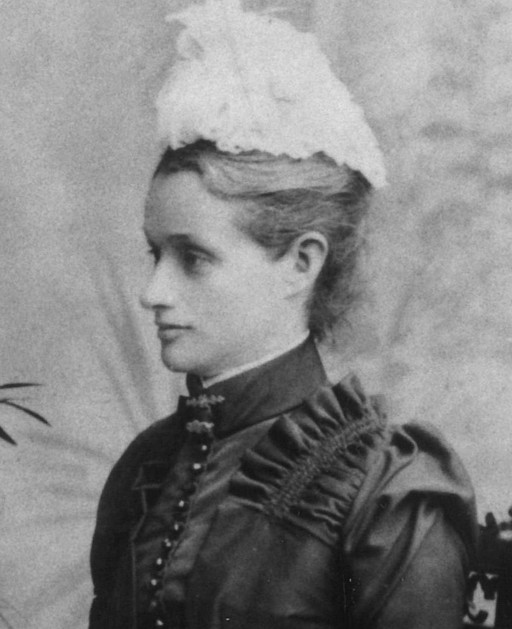Mary Georgina
» Mary Georgina McIntyre (1850-1901)
Mary Georgina was the youngest of Jessie and Archibald's children.
» Mary Georgina McIntyre (1850–1901)
married John Cameron Campbell (1847–1931) in Glen Innes, 31.03.1870
About Us
We are the descendants of Anglo-Scottish-Prusso-Germanic Australian migrants who settled in the newly formed colonies of New South Wales and Queensland in the nineteenth century. The idea behind these pages is to present the stories and characters of those early settlers along with information about their origins, descendants, families, whereabouts and activities.There are often themes running through their struggles and achievements telling a tale of resourcefulness and hardships in an alien world. The paradox of Australia as an ancient and raw continent and as a 'New World' portrays a collision of ideals and realities yet still shows a continuity in how those people dealt with everyday life.